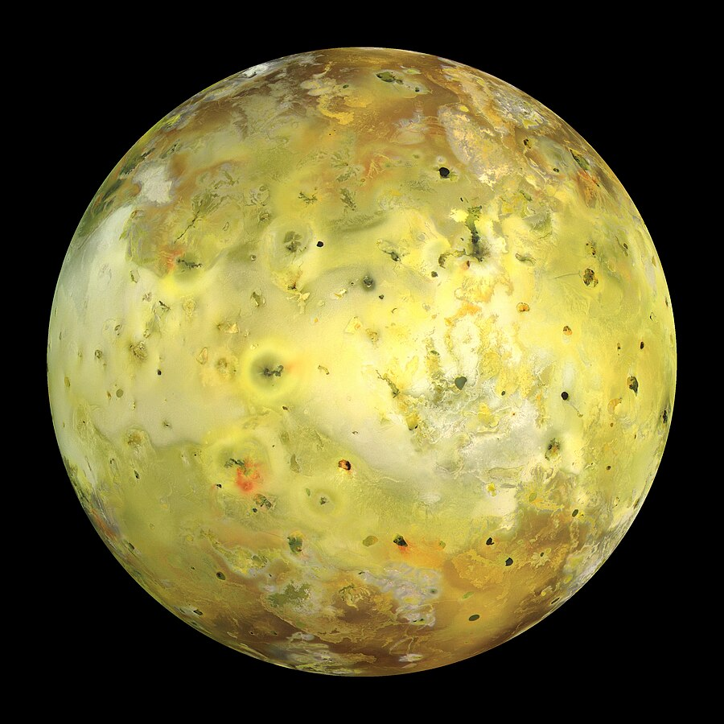
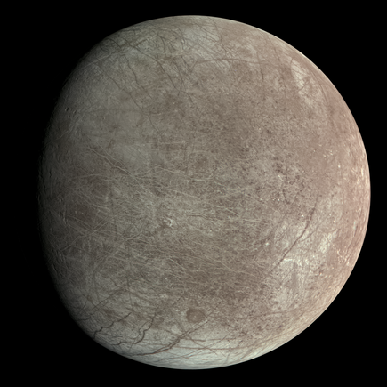
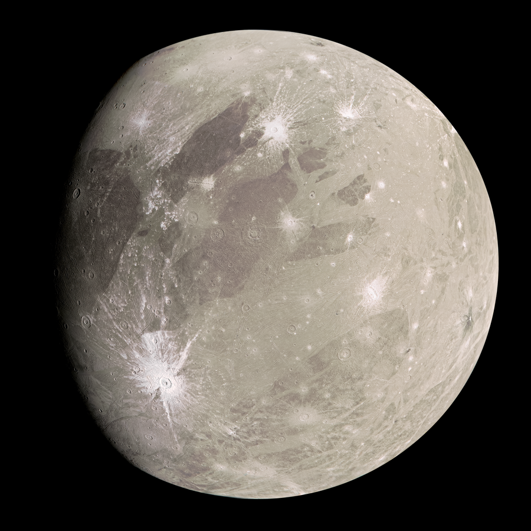
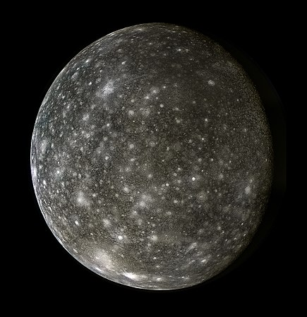

Io is the innermost and second smallest of the four Galilean moons of the planet Jupiter.
Wikipedia

Europa is smallest of the four Galilean moons.
Wikipedia

Ganymede is largest and most massive natural satellite of Jupiter and in the Solar system.
Wikipedia

Callisto is the outermost of the four large moon of Jupiter.
Wikipedia